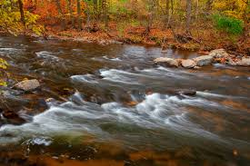
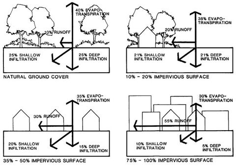
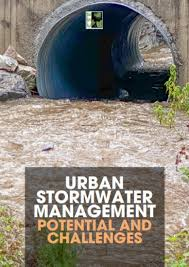
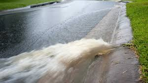

Stormwater Management
Understanding Urban and Rural Stormwater Systems

Overview of Stormwater Management: Stormwater management involves controlling rainwater runoff to reduce flooding, improve water quality, and protect infrastructure.

Methods of Stormwater Management:
- Green Infrastructure: Includes rain gardens, permeable pavements, and bioswales.
- Detention Basins: Temporarily store runoff to control flooding.
- Retention Ponds: Hold water for extended periods to improve water quality.
- Storm Sewers: Underground pipes that channel excess rainwater.

Importance of Stormwater System Maintenance:
- Prevents water pollution and soil erosion.
- Reduces urban flooding and property damage.
- Supports ecological balance by managing runoff.

Challenges in Stormwater Management:
- Urbanization: Increases impervious surfaces, reducing natural absorption.
- Climate Change: Extreme weather events cause excessive runoff.
- Pollution: Stormwater can carry harmful pollutants into water bodies.
- Infrastructure Costs: Building and maintaining systems require significant investment.

Conclusion: Effective stormwater management is essential for sustainable urban and rural development. Implementing green solutions and maintaining infrastructure can mitigate water-related challenges.